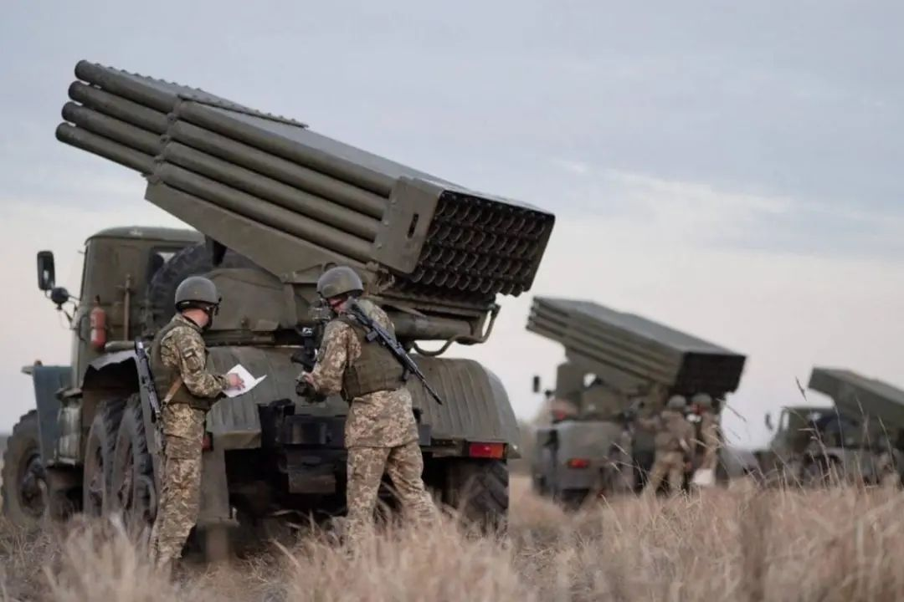

收录于合集

作品简介
原标题： The Day After Russia Attacks
What War in Ukraine Would Look Like—and How America Should Respond
作者： 亚历山大·文德曼（Alexander Vindman），美国退役陆军中校，前国家安全委员会欧洲事务主任，约翰·霍普金斯大学高级国际研究学院外交政策研究所高级研究员；多米尼克·布斯蒂罗斯（Dominic Cruz Bustillos），法律研究所的研究员。
编译： 子目，国政学人编译员

2022年1月，在乌克兰的赫尔森地区举行军事演习。
图源：乌克兰国防部/路透社
正文
尽管最近几周举行了一系列会议，但美国、北约、乌克兰和俄罗斯并没有找到外交解决方案，也不能缓和乌克兰—俄罗斯边境的紧张局势。尽管俄罗斯还没有完全放弃外交伪装，但俄罗斯和西方期望之间的鸿沟已经暴露无遗。俄罗斯官员已明确表示，他们对与战略稳定或军事演习相关的提议不感兴趣，甚至对暂停乌克兰加入北约的提议不感兴趣。俄罗斯总统普京寻求彻底瓦解欧洲冷战后的安全架构，并推翻有关国家自决权的基本国际协议——这是美国及其伙伴和盟国永远不会接受的结果。
与此同时，尽管俄罗斯保证没有“入侵”乌克兰的计划——俄罗斯军队自2014年以来一直占领乌克兰领土并在乌克兰领土上开战——但在乌克兰—俄罗斯边境沿线的军事集结却有增无减。最近， 来自俄罗斯东部军区的军事装备一直在向西移动，而运输直升机以及支援部队已经就位，可能会发动全面进攻。 俄罗斯还宣布将与白俄罗斯举行将持续到2月20日的联合军事演习，以此证明在乌克兰北部进行军事集结是合理的。俄罗斯军队已经集中在乌克兰的南部和东南部边界附近。
本周早些时候， 美国总统拜登预测，普京最终将决定以某种形式入侵乌克兰。 “我认为他会尽可能地考验西方、考验美国和北约吗？是的，我认为他会的，”总统在新闻发布会上说。“我的猜测是他会打进乌克兰，”拜登补充道。
乌克兰发生重大军事冲突将是一场灾难。 这是任何人都不应该渴望的结果。但现在美国必须为此做好准备。
01
现在发生了什么？
假设外交失败，可能会出现三种情况。哪一个会实现，在很大程度上取决于普京的决定。他的最终目标是削弱乌克兰的军事能力，在乌克兰政府中播下动荡的种子，并最终将乌克兰变成一个失败的国家——这是普京寻求的结果。普京将不再让乌克兰成为一个顽固的对手，不再成为俄罗斯的安全挑战的威胁。普京厌恶西方人将自己模式移植到东斯拉夫文明，这将会影响俄罗斯的政治。克里姆林宫对乌克兰的国内和外交政策的影响力和控制力正在下降，因此它只能通过武力实现其目标。
第一种情况将涉及对当前危机的强制性外交解决方案。 俄罗斯可能会正式承认或吞并被占领的乌克兰东部顿巴斯地区。俄罗斯联邦共产党已经采取步骤向俄罗斯国家杜马提出一项法案，该法案将承认顿巴斯的分离主义小国，其方式类似于俄罗斯承认格鲁吉亚的两个分离地区阿布哈兹和南奥塞梯。这将使克里姆林宫避免进一步的军事升级，但仍能取得“胜利”。俄罗斯领导层也可能希望让乌克兰陷入类似于2008年的内战状态，当时格鲁吉亚总统萨卡什维利在阿布哈兹和南奥塞梯与俄罗斯支持的分离主义分子作战。然而，就其本身而言，这些举措并不代表俄罗斯会捞到什么好处。俄罗斯将失去在乌克兰国内政治中插入亲克里姆林宫“第五纵队”的潜力。如果普京选择了这条路线，那么美国和北约可能仍会在北约东翼增加部署以应对，这是克里姆林宫并不希望的。
第二种情况是俄罗斯在空中力量有限的情况下进行有限的进攻，以夺取乌克兰东部和顿巴斯的更多领土，或者完全吞并。 在这种情况下，俄罗斯将占领亚速海的乌克兰主要港口马里乌波尔，以及作为乌克兰苏维埃社会主义共和国两次世界大战期间首都的具有象征意义的主要城市哈尔科夫。俄罗斯还可以通过陆、空和海上力量从东部和南部进行钳形进攻。从南方，俄罗斯可以建立连接克里米亚和俄罗斯大陆的“陆桥”。它还可以发动两栖行动，夺取乌克兰最重要的港口敖德萨，然后向已经驻扎在德涅斯特河沿岸的俄罗斯军队推进，
此举将剥夺乌克兰南部沿海重要的经济港口，使乌克兰成为一个内陆国家，并解决俄罗斯长期以来向克里米亚提供包括水在内的补给品的后勤问题。这将是一项庞大的行动，需要动员俄罗斯在克里米亚以及乌克兰东部和北部边境已经集结的所有部队。这还需要占领和控制关键要塞。俄罗斯将被迫付出代价高昂的代价，来占领乌克兰的主要城市，但俄罗斯将会面临艰难的城市战、旷日持久的军事行动和代价高昂的叛乱。此外，这样做会导致乌克兰被削弱大，但不会导致国家失败。
因此， 第三个也是最有可能的结果是俄罗斯在所有攻击轴上使用陆地、空中和海上力量进行全面进攻。 在这种情况下，俄罗斯将尽快建立空中和海上优势。一些俄罗斯地面部队随后将向东北部的哈尔科夫和苏梅推进，而现在驻扎在克里米亚和顿巴斯的其他地面部队将分别从南部和东部推进。与此同时，驻白俄罗斯的俄罗斯军队可以直接威胁基辅，从而牵制乌克兰军队，否则这些军队可能会向东部和南部增援。这些部队可能会向基辅推进，以加速乌克兰政府的投降。
在这种情况下，长期占领是不可能的。突袭和占领主要城市将导致城市巷战，导致俄罗斯军军队的额外伤亡。俄罗斯军队更有可能占领和控制领土，以建立和保护补给线，然后获得有利的外交解决方案，并且对乌克兰造成足够的伤害。乌克兰和西方将会被迫收拾残局。此次行动的重点是对乌克兰政府、军队、关键基础设施以及对乌克兰人的民族认同和士气具有重要意义的地方进行惩罚性打击。俄罗斯将使用其炸弹、火箭、大炮、巡航导弹和短程弹道导弹瞄准总统府、总统行政大楼、最高拉达（乌克兰立法机构）、内政部、国防部、乌克兰安全局总部、基辅民主广场以及象征乌克兰民主的场所。网络攻击将打击关键基础设施，例如乌克兰的电网，这可能会进一步瘫痪乌克兰国家。俄罗斯还将优先考虑摧毁乌克兰武器制造商。俄罗斯会消灭乌克兰的海王星巡航导弹、Sapsan导弹系统和Hrim-2短程弹道导弹。
地面和海上进攻将旨在包围和消灭乌克兰的武装部队，占据必要的关键地形，并使用空中力量和远程火力来实现俄罗斯的军事和政治目标。这些袭击将造成数万人伤亡并引发人道主义灾难，在文职和军事指挥系统中引发混乱，甚至可能会斩首乌克兰领导人。如果一切都按照俄罗斯的计划进行，这些袭击将削弱乌克兰政府、军事和经济基础设施——目的是使乌克兰成为一个失败国家。
02
前所未有的回应
无论俄罗斯选择怎么做，美国及其盟国和伙伴必须进行回应，因为拜登政府此前曾警告过美国会回应。美国参议员罗伯特·梅南德斯（Robert Menendez）已经提出了一项法案——《2022年捍卫乌克兰主权法案》。它包括支持乌克兰军队的额外贷款；增强乌克兰的防御能力；增加对美乌军事交流项目的支持；在乌克兰打击虚假信息；公开披露普京及其核心圈子成员的不义之财；制裁俄罗斯官员；对俄罗斯金融机构进行制裁；禁止涉及俄罗斯主权债务的交易；审查对北溪2的制裁；以及对俄罗斯能源和矿业部门的制裁。这个法案是向保卫乌克兰迈出的大胆一步。
拜登政府已经表示支持梅南德斯的法案。拜登应该更进一步，在参议院和众议院进行引导，谨慎行事，以确保这些关键措施不会成为党派争吵的又一个牺牲品。拜登最近与两党参议员就乌克兰问题举行了会议，开局良好。传统上，两党都强烈支持乌克兰。但 克里姆林宫认为，美国内部缺乏凝聚力将削弱华盛顿做出强烈反应的能力。国会绝不能相信这种信念。 梅南德斯法案的效力不仅来自其实质内容，还在于它发出的关于两党对乌克兰的压倒性支持的信号。
拜登政府还应落实针对向俄罗斯出口美国先进技术（如半导体和微芯片）的制裁措施，这一措施可能会对俄罗斯航空航天和军火工业产生不利影响。此外，国会或拜登政府不仅应该制裁普京的核心圈子，还应该制裁纳瓦尔尼先前列出的那35个人。对普京身边的关键寡头施加压力与制裁，是非常重要的。
有些人可能会质疑制裁的有效性。的确，俄罗斯有6300亿美元的国际储备、强大的能源市场以及对SWIFT的替代手段，因此俄罗斯可能能够经受住风暴。 然而，制裁仍会有效削弱克里姆林宫的恶意影响网络。就目前而言，制裁威胁已经对俄罗斯股市产生了不利影响。
话虽如此， 如果没有欧盟的跨大西洋团结与合作，制裁的意义和有效性将大大降低——华盛顿的欧洲盟友对制裁可能损害本国经济的可能性持谨慎态度。 根据拜登在最近的新闻发布会上的评论，华盛顿似乎正在努力对俄罗斯的侵略做出统一的反应，特别是在网络攻击、非军事或准军事行动的情况下。法国总统马克龙呼吁欧盟与俄罗斯进行自己的对话，这已经破坏了跨大西洋统一战线的形象。与此同时，德国拒绝向乌克兰出口武器，也未能就推迟或取消批准北溪2号管道项目给出明确的立场。
俄罗斯可能会切断对欧洲的能源供应，这将加剧现有的欧洲能源危机，威胁跨大西洋统一。 能源危机已导致美国去年12月向欧盟国家输送更多液化天然气。欧洲可能被迫在短时间内寻找替代能源。在可能的情况下，华盛顿应动用自己的石油和天然气战略储备，以协助其欧洲盟国和合作伙伴。
其他国家担心， 将俄罗斯金融系统与SWIFT断开连接会对欧洲经济造成打击，而且由于SWIFT受制于比利时和欧洲法律，华盛顿必须在一定程度上依赖欧洲的默许来执行对俄罗斯的金融制裁。 美国可能会试图迫使欧洲国家参与进来，就像它在2012年所做的那样，当时它推动将伊朗与SWIFT断开。但那样做的风险是会破坏跨大西洋统一。华盛顿可能不愿意胁迫其盟友。
03
加快步伐
在军事方面，如果美国还没有这样做的话，美国可以通过实时共享战略、作战甚至战术情报来帮助乌克兰政府对俄罗斯的行动做出反应。美国也应该效仿英国，在俄罗斯发动进攻之前进行空运援助。华盛顿应该向乌克兰提供小型武器、弹药、军事装备和大量便携式防空系统，以及更先进的系统，包括爱国者防空导弹和鱼叉反舰导弹。这种方法的批评者可能会争辩说，这些系统的交付将为克里姆林宫先发制人地发动攻击提供借口。但是，如果俄罗斯已经采取军事行动，那么美国就没有理由不采取行动了。
尽管这些更先进的系统将无法及时交付，但某些系统仍然可以具有打击力。它们不会改变乌克兰和俄罗斯之间的军事力量平衡，但它们会给俄罗斯入侵者带来额外的成本，并在与其他行动相结合时有助于威慑。美国还应继续加快向乌克兰转让美国制造的武器的审批程序，就像最近对爱沙尼亚、拉脱维亚和立陶宛所做的那样。此外， 万一发生长期占领和叛乱，拜登政府应该支持乌克兰的叛乱分子。
华盛顿还应该部署更多的部队和军事装备，以安抚和帮助其欧洲盟友。苏联和俄罗斯统治的记忆在北约东翼国家仍然记忆犹新，它们不会袖手旁观。正如北约《宪章》第5条所保证的那样，美国必须向它们保证提供支持。至少，爱沙尼亚、拉脱维亚、立陶宛、波兰、罗马尼亚和斯洛伐克等国家可能会加强自己的防御，同时呼吁美国扩大其前沿存在。为了进一步加强该联盟，华盛顿应该考虑提高芬兰和瑞典加入北约的可能性，如果这两个国家要求这么做。
作为最后一步，美国及其欧洲盟友和合作伙伴必须与国际人道主义组织一道，建立人道主义走廊，提供资源和人员来保护难民。 数以万计的难民会出现，甚至有数十万、数百万。 美国、英国和欧盟应该为他们提供紧急特别移民签证，就像去年针对阿富汗难民所做的那样。北约成员国需要分担这种涌入带来的负担；不能指望北约东翼国家单独承担负担。
04
准备时间
尽管拜登政府在与俄罗斯的虚假谈判过程中处理得很好，但最终的结果仍将是错失良机。华盛顿已经把自己置于这样一个境地，威慑可能会失败。 今天的威慑选择比去年、上个月甚至上周要糟糕得多，威慑越来越不起作用。 假如去年4月美国对俄罗斯的军事集结采取更有力的反应，那么就可能会对改变克里姆林宫的计算。华盛顿现在必须以有限的威慑和胁迫能力来对抗俄罗斯。
世界正处于二战以来欧洲最大规模的军事攻势的边缘。考虑到主要政治利益相关者的现有利益，美国、乌克兰和俄罗斯不太可能显著改变它们目前对局势的处理方式。华盛顿无意动用硬实力来威慑俄罗斯，也不会在其几十年来信奉的原则或价值观上退缩。 在乌克兰，总统泽连斯基的地位已经岌岌可危，因为他的支持率不断下降，未能实施与俄罗斯的双边危机降级计划。 他缺乏领导作战的能力，而是专注于起诉前总统波罗申科涉嫌叛国罪，与寡头争夺利益。他对当前俄罗斯的威胁轻描淡写。对于泽连斯基来说，向俄罗斯投降无异于政治自杀。即使华盛顿或基辅确实改变了立场，也不能保证莫斯科会满意并缓和局势。
一旦战争开始，地缘政治格局对美国国家安全的挑战将变得更加严峻。 华盛顿应该做最坏的打算，并据此制定计划，竭尽全力保护美国的利益。拜登政府必须保持一个微妙的平衡：避免与俄罗斯进行一对一的军事对抗，同时惩罚俄罗斯的威胁。现在，没有比这更重要的任务了。
排版 | 黄紫蓝
文章观点不代表本平台观点，本平台评译分享的文章均出于专业学习之用, 不以任何盈利为目的，内容主要呈现对原文的介绍，原文内容请通过各高校购买的数据库自行下载。

国政学人
支持学术公益与知识传播
微信扫一扫赞赏作者 __赞赏
已喜欢，对作者说句悄悄话
取消 __
发送给作者
发送
最多40字，当前共字
上一页 1/3 下一页
长按二维码向我转账
支持学术公益与知识传播
受苹果公司新规定影响，微信 iOS 版的赞赏功能被关闭，可通过二维码转账支持公众号。